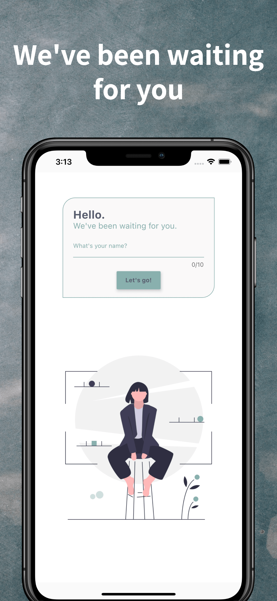
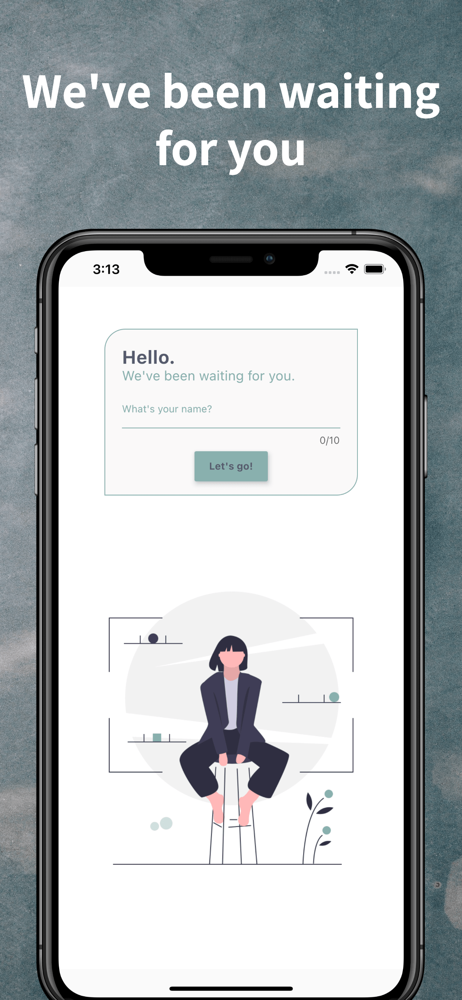
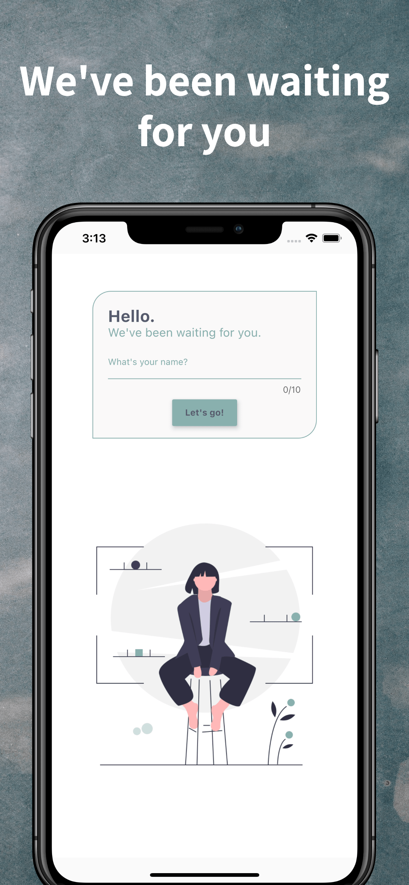

← back to projects


 

Mood Connect
Micro Diary & Mood Tracker

About Mood Connect
Keep a micro diary in just 5 seconds without writing a single word. Choose the date, select your daily mood, then save quality sleep, eating healthy, hygiene, hobbies, and socializing data. Keeping a micro diary has never been easier.
- Mood History: Review your mood history over time to understand your emotional patterns.
- Statistics: View your top moods, top emotions, top activities, activities that bring you down, and activities that cheer you up.
- Improvement Areas: Identify the areas where you are open to improvement.
- Privacy: Examine your diary in complete privacy.
- Habit Tracking: Track sleep, eating, hygiene, hobbies, and socializing habits alongside your mood.